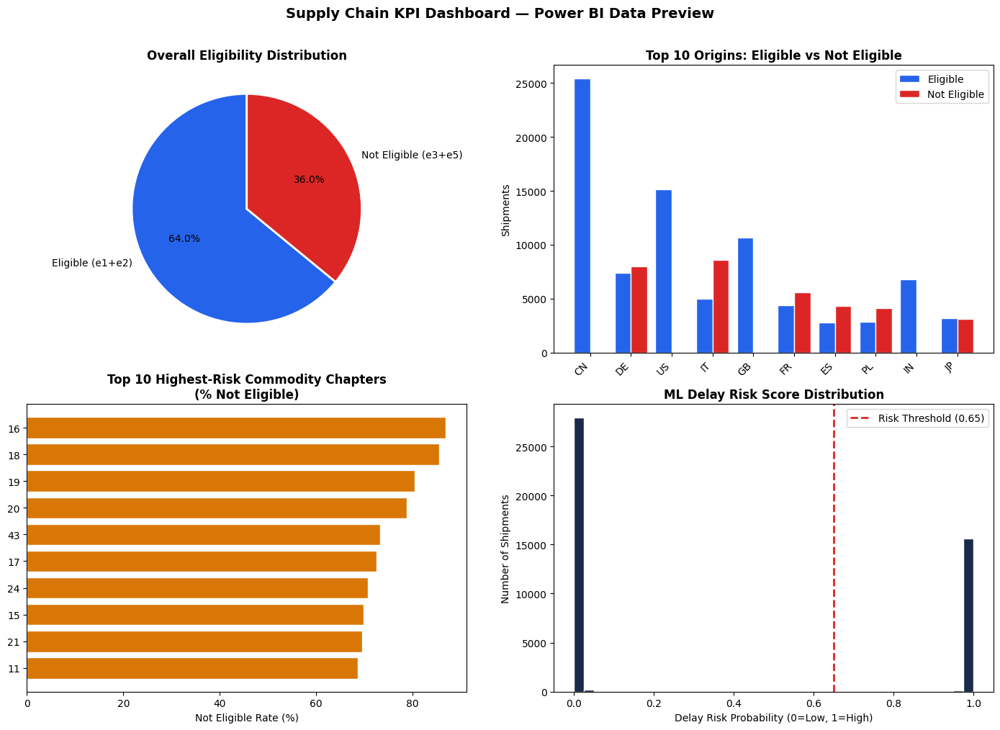
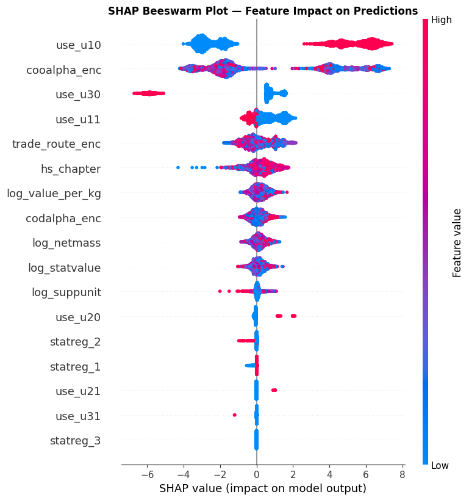
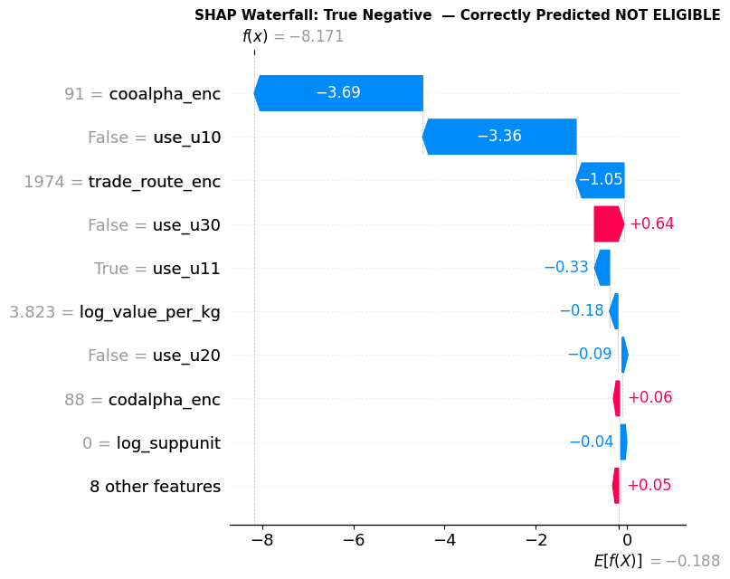
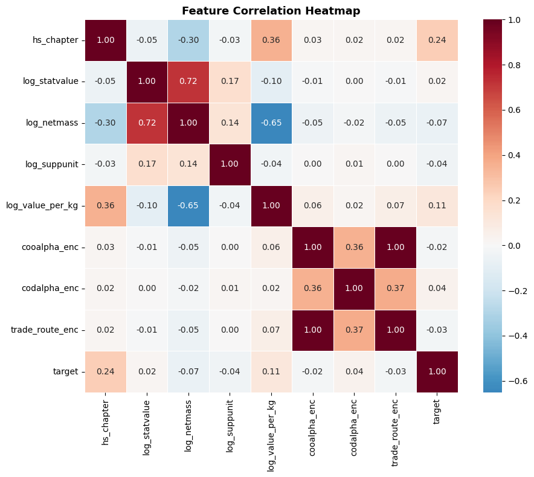
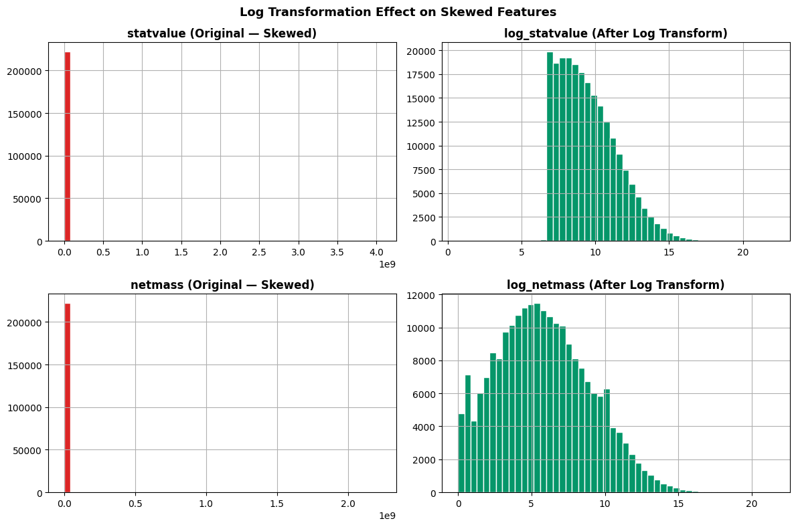

The problem
Supply chains fail quietly. By the time a delay is visible in a monthly report, the damage — missed deliveries, idle inventory, unhappy customers — is already done. The challenge was to give teams real-time visibility and an early warning for delays, in a format anyone could use without a data-science background.
My approach
I built an end-to-end pipeline that turns raw trade/customs shipment data into an early-warning decision-support layer:
- Preprocessing — log-transforms on heavily skewed value/mass features so models aren't dominated by outliers.
- Feature engineering — HS commodity chapter, origin/destination encodings, trade-route features and usage flags.
- Tuned XGBoost classifier for eligibility / delay-risk prediction, evaluated on ~44k held-out shipments.
- SHAP interpretability — beeswarm + waterfall plots so every prediction can be explained to a stakeholder.
- KPI dashboard — eligibility mix, high-risk origins/commodities, and ML risk-score distribution for BI consumers.
What I found
The tuned XGBoost model reached 86.9% accuracy with a ROC-AUC of 0.96 — strong separation between high- and low-risk shipments. SHAP showed that usage flags, country of origin, trade route and HS commodity chapter were the biggest drivers. The KPI layer also surfaced that roughly 36% of shipments fall into the not-eligible band, with clear concentration in a handful of commodity chapters and origins.
What I took away
This project sits right where my two worlds meet — data science and business operations. Building it reinforced that the best analytics work isn't the most complex model; it's the one that lands in front of a decision-maker at the right moment, in a form they instantly trust.
Results & visualisations
Charts pulled from the project notebooks (XGBoost + SHAP + KPI layer). View the code on GitHub →




